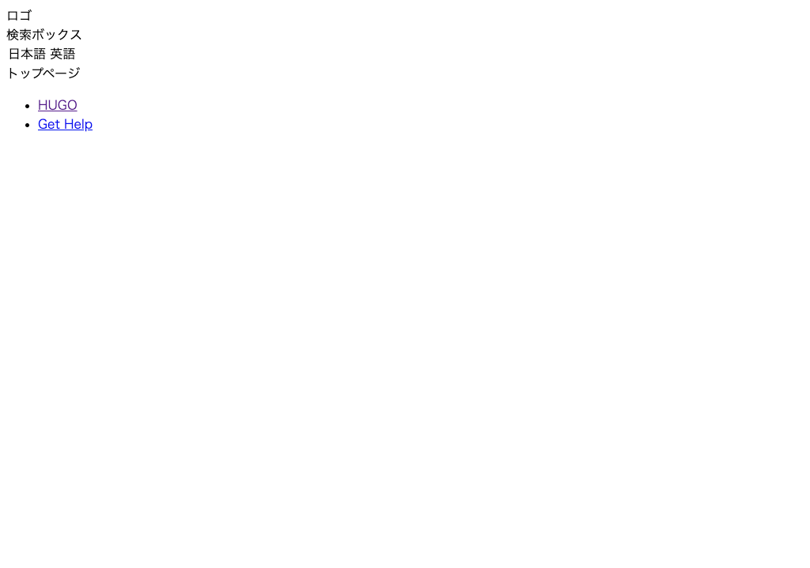

ベース部分を作る¶
サイト全体のベース部分と、ヘッダー・フッター、各テンプレートの大枠部分を作成していきましょう。
ベーステンプレート¶
themes/mytheme/layouts/_default/baseof.html を開いて、以下に書き換えます。
1 2 3 4 5 6 7 8 9 10 11 12 13 14 15 16 17 | <!DOCTYPE html> <html lang="{{ .Site.LanguageCode }}"> <head> {{ partial "head.html" . }} </head> <body> <header> {{ partial "header.html" . }} </header> <main class="main"> {{ block "main" . }} {{ end }} </main> <footer> {{ partial "footer.html" . }} </footer> </body> </html> |
<head>の内容（head.html）、ヘッダー（header.html）およびフッター（footer.html）はパーシャルテンプレートを読み込みます。- ページの種類によって中央部分の内容は異なるので、各ページテンプレートで定義した
main（部分テンプレート定義）を呼び出します。
<head> の部分テンプレート¶
themes/mytheme/layouts/partials/head.html を開いて、以下に書き換えます。
<head> 内では、HTML のメタ情報や css などの読み込みを行います。読み込んでいる css ファイルについてはあとで作成します。
1 2 3 4 | <meta charset="UTF-8"> <link rel="stylesheet" href="{{ "css/reset.css" | relURL }}"> <link rel="stylesheet" href="{{ "css/default.css" | relURL }}"> <title>{{ if not .IsHome }}{{ .Title }} | {{ end }}{{ .Site.Title }}</title> |
ヘッダーの部分テンプレート¶
themes/mytheme/layouts/partials/header.html を開いて、以下に書き換えます。
1 2 3 4 5 6 7 8 9 10 11 12 13 14 15 16 | <div class="header"> <nav class="header-logo"> ロゴ </nav> <div class="header-menu-container"> <nav class="search-box"> 検索ボックス </nav> </div> <nav class="language"> <select name="language" onChange="location.href=value;"> <option value="aaa.html">日本語</option> <option value="bbb.html">英語</option> </select> </nav> </div> |
フッターの部分テンプレート¶
themes/mytheme/layouts/partials/footer.html を開いて、以下に書き換えます。
1 2 3 4 5 6 7 8 | <div class="footer"> <nav class="relevant-sites"> <ul> <li><a href="https://gohugo.io/">HUGO</a></li> <li><a href="https://discourse.gohugo.io/">Get Help</a></li> </ul> </nav> </div> |
ホームページのテンプレート¶
themes/mytheme/layouts/index.html を開いて、以下に書き換えます。
1 2 3 4 5 | {{ define "main" }} <div class="home"> トップページ </div> {{ end }} |
リストページのテンプレート¶
themes/mytheme/layouts/_default/list.html を開いて、以下に書き換えます。
1 2 3 4 5 6 7 | {{ define "main" }} {{ partial "nav.html" . }} <div class="list"> {{ partial "nav.html" . }} list </div> {{ end }} |
シングルページのテンプレート¶
themes/mytheme/layouts/_default/single.html を開いて、以下に書き換えます。
1 2 3 4 5 6 7 8 9 | {{ define "main" }} <div class="content"> {{ partial "nav.html" . }} <article> <h1>{{ .Title }}</h1> {{ .Content }} </article> </div> {{ end }} |
カテゴリーツリーの部分テンプレート¶
themes/mytheme/layouts/partials/nav.html を開いて、以下に書き換えます。
1 2 3 | <nav class="nav"> カテゴリツリー </nav> |
動作確認¶
開発サーバを起動して確認してみましょう。
1 2 3 4 | # /Hugo/Sites/theme_tutorial 内 $ hugo server # http://localhost:1313/ と https://localhost:1313/sample/ にアクセスして確認 |
-
ホームページ（
http://localhost:1313/）
-
シングルページ（
http://localhost:1313/sample/）